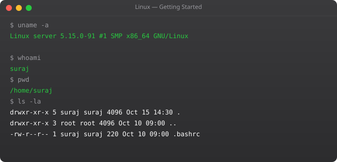

Linux powers 96% of the world's servers, all Android devices, supercomputers, cloud infrastructure, and most DevOps tooling. Whether you want to work in DevOps, cloud engineering, cybersecurity, or embedded systems, Linux knowledge is non-negotiable. The terminal that seems intimidating at first becomes the most powerful tool you have ever used.
I remember my first time staring at a Linux terminal with no GUI, no icons, just a blinking cursor. Three months later I was navigating file systems, managing processes, writing shell scripts, and finding the terminal dramatically faster than any graphical interface. The learning curve is real but short.
Linux is an open-source operating system kernel created by Linus Torvalds in 1991. A Linux distribution (distro) packages the Linux kernel with system utilities, package managers, and applications. Common distros: Ubuntu (most popular for beginners and servers), Debian (stable), CentOS/RHEL (enterprise), Fedora (cutting-edge), Arch (advanced). For DevOps, Ubuntu LTS is the standard recommendation.
/ # Root -- the top of the entire filesystem
/bin # Essential user binaries (ls, cp, mv, cat)
/sbin # System binaries (ifconfig, fdisk, reboot)
/etc # Configuration files (/etc/nginx/, /etc/ssh/)
/home # User home directories (/home/suraj/)
/root # Root user home directory
/var # Variable data: logs (/var/log/), databases
/tmp # Temporary files (cleared on reboot)
/usr # User programs (/usr/bin/, /usr/lib/)
/opt # Optional/third-party software
/proc # Virtual filesystem -- kernel/process info
/dev # Device files (disks, terminals)
/mnt # Mount point for temporary mounts
/media # Mount point for removable mediawhoami # Show current username
hostname # Show machine name
uname -a # Show kernel and OS info
date # Current date and time
cal # Calendar
uptime # System running time and load
w # Who is logged in
history # Show command history
history | grep ssh # Search command history
!! # Run last command again
!ssh # Run last command starting with sshman ls # Manual page for ls command
man -k search # Search manual pages by keyword
ls --help # Brief help for a command
info coreutils # GNU info system (more detailed)
type ls # What kind of command is ls?
which python3 # Where is python3 located?
whereis nginx # All locations for nginxCtrl+C # Kill current process
Ctrl+Z # Suspend current process (background)
Ctrl+D # Exit/logout (EOF)
Ctrl+L # Clear screen (same as: clear)
Ctrl+A # Move cursor to start of line
Ctrl+E # Move cursor to end of line
Ctrl+U # Delete from cursor to start
Ctrl+K # Delete from cursor to end
Ctrl+R # Search command history
Tab # Autocomplete commands and paths
Tab Tab # Show all completion options
Up/Down arrows # Navigate command historyUbuntu/Debian: Large community, extensive documentation, best for beginners, widely used on AWS. Package manager: apt.
CentOS/RHEL/AlmaLinux: Enterprise-grade stability, used in corporate environments. Package manager: yum/dnf.
Arch Linux: Cutting-edge, minimal installation, learn-by-doing philosophy. For advanced users. Package manager: pacman.
Alpine Linux: Extremely small (5MB base image), used in Docker containers for minimal image sizes. Package manager: apk.
Yes, absolutely. All major cloud platforms run Linux. Docker containers run Linux. Kubernetes nodes run Linux. CI/CD runners run Linux. You will spend significant time working in Linux environments throughout your DevOps career.
Ubuntu 22.04 LTS or 24.04 LTS. It has the largest community, the most tutorials, and is widely used on AWS, Azure, and GCP. Once you know Ubuntu, you can transfer skills to other distros in days.
Terminal: the application that provides a text interface. Shell: the program inside that interprets your commands (bash, zsh, fish). Command line: the interface for typing commands. In practice, these terms are often used interchangeably.
Install Ubuntu in VirtualBox or VMware on Windows. Use WSL2 on Windows 10/11 (Windows Subsystem for Linux). Use a free EC2 t2.micro instance on AWS. Use an online practice environment like killercoda.com or labs.play-with-docker.com.
sudo (superuser do) runs a command with root/administrator privileges. Example: sudo apt install nginx. Use it only when necessary. Running everything as root is dangerous -- use your normal user account and sudo when elevated access is needed.
In Part 2, we cover file system navigation -- moving around directories, listing files, and finding what you need.
whoami && hostname # Who am I, where am I?
uname -a # What OS version is this?
uptime # How long has it been running?
free -h # How much memory?
df -h # How much disk?
ps aux | wc -l # How many processes?
ss -tlnp # What is listening on which ports?
cat /etc/os-release # Full OS information
last | head # Who logged in recently?
cat /var/log/auth.log | tail -20 # Recent authentication eventsEverything is a file. Linux represents almost everything as a file: regular files, directories, devices (/dev/sda), processes (/proc/1234), network sockets. This uniform interface means the same tools (cat, ls, chmod) work across different types of "files."
Users and permissions. Every process runs as a user. Every file has an owner. Permissions determine what each user can do with each file. This is Linux's core security model.
Processes and signals. Every running program is a process with a PID. Processes communicate via signals. kill sends a signal. Ctrl+C sends SIGINT. Ctrl+Z sends SIGTSTP. Understanding signals is essential for process management.
Streams: stdin, stdout, stderr. Every process has three standard streams. Programs read from stdin (0), write output to stdout (1), and write errors to stderr (2). Pipes and redirection connect these streams between programs.
ls -la | grep ".conf" # Pipe stdout to grep
ps aux | sort -k3 -rn | head -10 # Top CPU processes
find /var/log -name "*.log" 2>/dev/null # Redirect errors to /dev/null
echo "hello" > file.txt # Redirect stdout to file (overwrite)
echo "world" >> file.txt # Append stdout to file
command 2>&1 | tee output.log # Capture both stdout and stderr